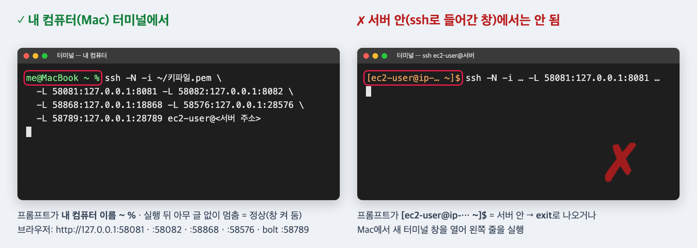

읽는 법 · 파란 칸 화면에 보이는 단추 · 글자(누름) · 노란 칸 직접 칠 글 · 검은 상자 터미널 명령(복사해 붙여 넣기) · 빨간 점선 상자 화면 그림(빨간 테 = 누를 곳) · 확인 필요 아직 정해지지 않은 값
1서버 준비 — 사양 · 보안 그룹 AWS 콘솔
할 일
인스턴스: t3.large(2 vCPU · 8GB) · 디스크 gp3 30GB · x86_64 · Amazon Linux 2023 · 접속 계정 ec2-user
보안 그룹 들어오는 규칙은 22번(SSH) · 내 IP만 — 다른 포트는 열지 않음 · 나가는 규칙은 기본(전부) 그대로
보일 것
인스턴스 '실행 중' · 보안 그룹 들어오는 규칙 한 줄(22 · 내 IP)
알아 둘 것
모든 화면 포트(8081 · 8082 · 18868 · 28576 · 28789 · 8796)는 서버 안 127.0.0.1에만 붙습니다. 그래서 화면은 8번의 터널로만 보고, 보안 그룹에 포트를 더하지 않습니다. 콘솔 화면은 계정 번호 · 주소가 보여 이 문서에 그림을 넣지 않습니다.
2서버 접속 내 컴퓨터 터미널
할 일
키 파일 경로와 서버 주소를 넣어 아래 한 줄(Windows는 PowerShell에서 같은 줄)
ssh -i <키 파일> ec2-user@<주소>
보일 것
프롬프트 [ec2-user@ip-… ~]$
막히면
'Permission denied' → 키 파일 권한 chmod 400 <키 파일> · 접속이 멈춰 있음 → 보안 그룹 22번이 지금 내 IP인지
저장소 받기와 .env 만들기는 문서 02 3 · 4번 그대로 — 편집기는 nano .env · change-me 비밀번호 줄 여섯을 긴 글자로
키는 서버의 키 파일에 직접 — 홈 폴더에 키 파일을 만들어 한 줄(키만, 또는 OPENAI_API_KEY= 뒤에 키)을 붙여 넣음 · .env의 OPENAI_API_KEY=는 비워 둠
echo $HOME/openai.key로 키 파일의 절대 경로를 봄 → .env의 주석 두 줄(# COMPOSE_FILE=… · # OPENAI_KEY_FILE=…)에서 앞의 #을 지우고, OPENAI_KEY_FILE= 뒤를 그 절대 경로로 바꿈($HOME · ~는 쓰지 않음)
Jev 키도 파일로: ~/jev.key에 한 줄 · .env의 JEV_API_KEY=는 비우고 JEV_BASE_URL=만 · COMPOSE_FILE=docker-compose.yml:compose.key-file.yml:compose.jev-key-file.yml(셋을 이어 씀) · JEV_KEY_FILE= 뒤에 절대 경로
세 파일을 나만 읽게
git clone <이 저장소 주소>
cd living-maintenance-guide
cp .env.example .env
nano ~/openai.key # OpenAI 키 한 줄
nano ~/jev.key # Jev 키 한 줄
echo $HOME/openai.key $HOME/jev.key # 이 절대 경로들을 .env에
nano .env # 비밀번호 줄 여섯 · 키 파일 줄 켜기
chmod 600 .env ~/openai.key ~/jev.key
보일 것
grep -E '^(COMPOSE_FILE|OPENAI_KEY_FILE|JEV_KEY_FILE)=' .env 줄(COMPOSE_FILE=… · OPENAI_KEY_FILE=<키 파일 절대 경로> · Jev도 파일이면 JEV_KEY_FILE=<절대 경로>) · ls -l .env ~/openai.key ~/jev.key 권한이 -rw-------
막히면
OPENAI_KEY_FILE을 $HOME/… · ~/…로 씀 → 대본이 .env를 셸로 읽어 경로가 틀어짐 · echo로 본 절대 경로를 그대로
알아 둘 것
키 값은 채팅 · 문서 · 화면 공유 · 녹화에 붙이지 않습니다. 키 파일은 컨테이너에 읽기 전용으로 물리고(compose.key-file.yml), 시작 대본이 컨테이너 안에서 읽습니다.
6모두 띄우기 서버
할 일
문서 02 5번 그대로 한 줄(-f · 앞에 붙이는 환경 값 없이) · 첫 빌드는 2 vCPU 서버라 맥보다 길 수 있음 확인 필요 · 서버 첫 빌드 시간 · 어림 40분
docker compose up -d
보일 것
끝에 Started · Healthy 줄들 · 오류 없이 프롬프트로 돌아옴
막히면
'OPENAI_KEY_FILE — 키 파일 경로' 글로 멈춤 → .env의 OPENAI_KEY_FILE 줄이 주석이거나 비었음(5번) · 빌드 실패 → 끝 30줄을 남기고 문서 10
알아 둘 것
COMPOSE_FILE을 .env에 두어야 대본(문서 04 7번 link-agentops.sh 등)이 컨테이너를 다시 켤 때도 키가 남습니다. 그래서 다른 문서의 docker compose 명령과 대본을 이 서버에서도 그대로 씁니다.
7정상인지 확인 서버
할 일
문서 02 6번 · 03 1 · 2번 그대로 — 브라우저 화면은 8번 터널 뒤에
docker compose ps
curl -s http://127.0.0.1:8796/health
docker compose logs kg-init --tail 5
보일 것
kg-init · trace-db-init Exited (0) · 나머지 running · healthy · health 줄 · 'KG_INIT ok …'
막히면
배포 서버가 오래 starting → 길게는 5분 · 그 뒤에도면 문서 10
8내 컴퓨터(Mac)에서 SSH 터널 — 화면 보기 내 컴퓨터 터미널 · 브라우저
할 일
서버에 접속한 창이 아니라 내 컴퓨터에서 새 터미널 창을 엽니다 — 프롬프트 끝이 %(Mac · 예 me@MacBook ~ %) · Windows PowerShell은 PS C:\Users\…> · 프롬프트가 [ec2-user@ip-… ~]$이면 서버 안이니 그 창에서는 하지 않음(exit로 나오거나 새 창)
아래 줄을 붙여 넣음(줄 끝 \는 다음 줄로 이어 씀 · Windows PowerShell은 \를 빼고 한 줄로) — -L 뒤 앞 번호(58…)는 내 컴퓨터 쪽 · 뒤 번호는 서버 쪽 · 쓰는 동안 이 창을 켜 둠(끄면 화면이 끊김)
브라우저 주소는 아래 표의 내 컴퓨터 쪽 번호 — 다른 문서의 127.0.0.1:8081 · 18868 같은 주소는 이 표의 58… 번호로 바꿔 씀
터미널은 아무 글 없이 멈춰 있음(정상) · 브라우저 http://127.0.0.1:58081 · 58082 · 58868에 세 화면
막히면
'Address already in use' → 내 컴퓨터가 그 번호를 이미 씀 · 앞 번호만 다른 빈 번호로(예 -L 59081:127.0.0.1:8081) 바꾸고 브라우저 주소도 그 번호로 · 브라우저가 안 열림 → 터널 창이 꺼졌거나 서버 안에서 실행했음(프롬프트를 봄)
알아 둘 것
58… 번호를 기본으로 쓰는 까닭: 내 컴퓨터에도 같은 스택을 띄워 두면 18868 같은 원래 번호는 내 컴퓨터 것이 열립니다. 내 컴퓨터에 아무 스택도 없으면 앞 번호를 서버와 같게(-L 8081:127.0.0.1:8081 …) 써도 됩니다. 서버 쪽 번호(뒤)는 바꾸지 않습니다.

내 컴퓨터(Mac) 터미널에서 친 터널 줄 · 서버 안에서는 안 됨 · 빨간 테: 프롬프트 끝 % = 내 컴퓨터 · [ec2-user@…]$ = 서버 안
터널 주소표 — 서버 쪽 번호 → 내 컴퓨터 브라우저 주소
화면
서버 쪽
내 컴퓨터에서 여는 주소
정비자 앱
8081
http://127.0.0.1:58081
상급자 앱
8082
http://127.0.0.1:58082
AgentOps
18868
http://127.0.0.1:58868
지식 그래프 화면(Neo4j)
28576
http://127.0.0.1:58576
지식 그래프 연결(Neo4j 연결 창 Connection URL)
28789
bolt:// · 127.0.0.1:58789
배포 서버 health(8796)는 서버 터미널에서만 봅니다(7번) — 터널에 넣지 않습니다.
9첫 상태 · 시연 브라우저(터널 너머) · 서버
할 일
문서 04(프로젝트 만들기 → 운영 지정) → 05 ~ 08 그대로 · 터미널 명령(scripts/…)은 서버에서, 화면은 내 컴퓨터 브라우저에서(주소는 8번 표의 58… 번호)
보일 것
각 문서의 그림과 같은 화면
10끄기 · 다시 켜기 · 처음으로 서버
할 일
끄기 · 다시 켜기는 문서 02 7번 · 처음 상태로는 문서 09 — 명령 그대로(.env의 두 줄로 키 파일이 함께 들어감)
오래 쓰지 않으면 콘솔에서 인스턴스 멈춤(디스크 요금만) · 다시 켜면 2번부터(주소가 바뀔 수 있음)